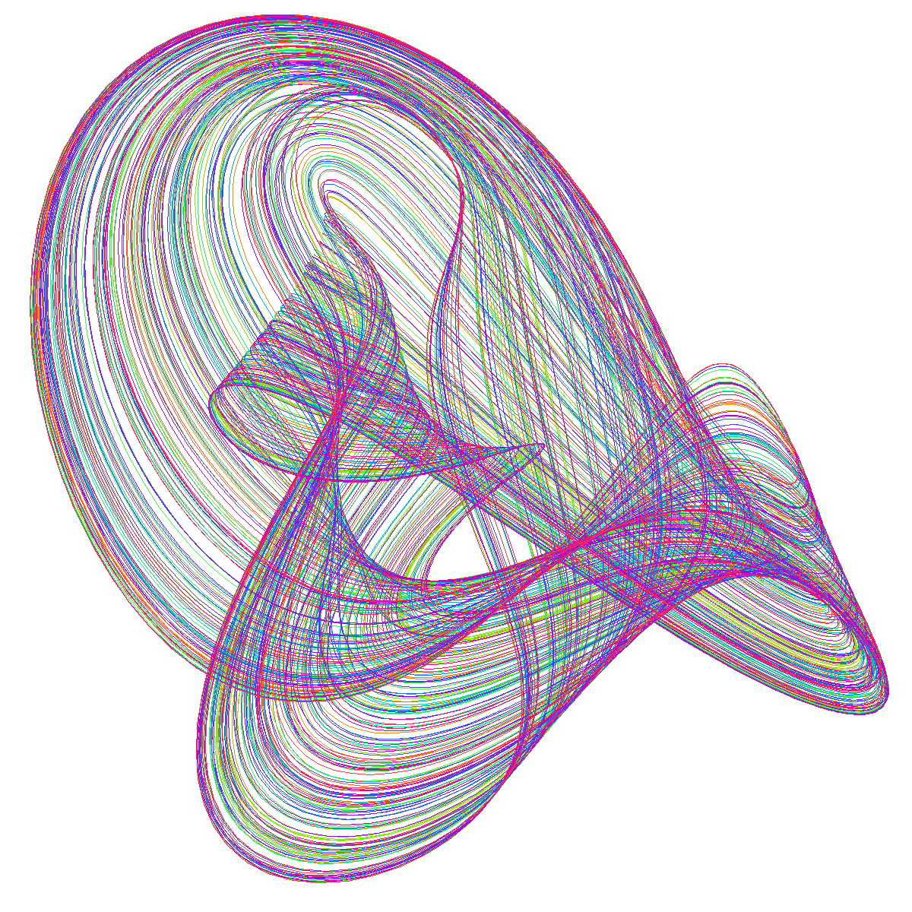

Em sistemas com 3 ou mais variáveis de estado existe outra possibilidade, chamada um atrator estranho, que é uma curva de comprimento infinito, que ocupa um volume finito do espaço de fase.
Em diferentes instantes a curva passa por diferentes pontos, sem nunca passar novamente pelo mesmo ponto.
Fonte: J. C. Sprott, Strange Attractors.